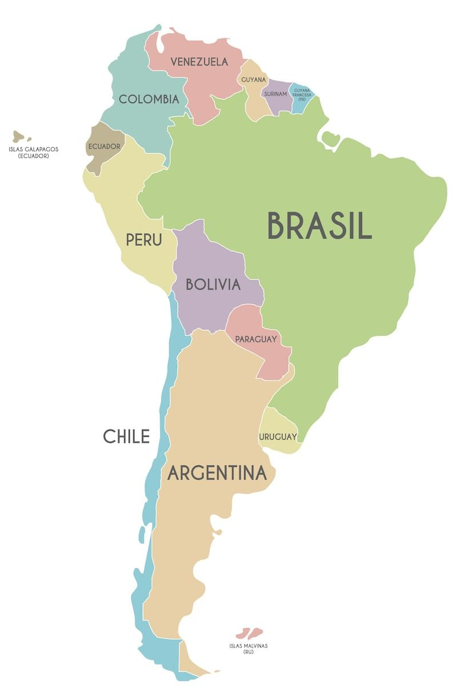

|  | America del Sur Cuando se habla de la América del Sur, Suramérica o Sudamérica, se hace alusión a la región de este continente que se haya de la línea del ecuador hacia abajo, y que constituye un solo bloque subcontinental distinto de Norteamérica, Centroamérica y las Islas del Caribe. Pause Remaining Time -1:10 Unmute × La América del Sur está ubicada entre el Océano Atlántico al este, el Océano Pacífico al oeste, el mar Caribe al norte y el océano Antártico al sur. Estos últimos se organizan en tres grandes regiones geográfico-culturales: el Caribe sudamericano, el Cono Sur y la región andina suramericana. Culturalmente hablando, Suramérica es predominantemente hispana, es decir, resultado de la colonización del Imperio Español de las tierras americanas, con la excepción de Brasil, antigua colonia (y luego reino) de Portugal, y de la Guyana británica, la Guyana francesa y Surinam, antiguas colonias del Imperio Británico y del Reino de Francia. Algunas perspectivas geográficas incluyen también a las islas de Trinidad y Tobago (antigua colonia inglesa) y de Aruba, Curazao y Bonaire (antiguas colonias de los Países Bajos). |
Suramérica está compuesta por doce países, que son: Argentina Buenos, Bolivia, Brasil, Chile, Colombia, Ecuador, Guyana,Paraguay, Perú, Surinam, Uruguay, Venezuela. Sudamérica presenta una gigantesca diversidad económica, que a su vez engendra modelos de vida sumamente distintos entre sí y sociedades muy dispares económica y socialmente. Por un lado existen colosos agrícolas como Argentina, Brasil y, en menor medida, Paraguay, cuyos principales productos de exportación son la soja, naranjas, caña de azúcar, café, yerba mate y limón. Por otro, la ganadería en Uruguay y Argentina es también una actividad de dimensiones internacionales considerables. La minería es otra gran actividad económica del subcontinente. El rubro petrolero se reparte entre Venezuela, Ecuador y Colombia, siendo la primera una productora de crudo de escala mundial con las mayores reservas petrolíferas del planeta, mientras que Bolivia subsiste en base a la exportación del gas natural y, en menor medida, de petróleo. |
|